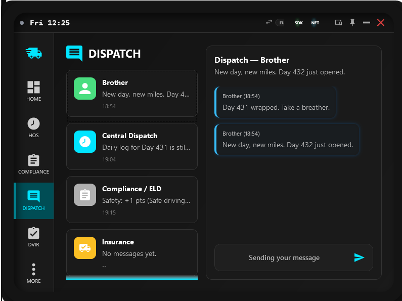
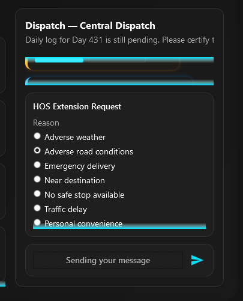
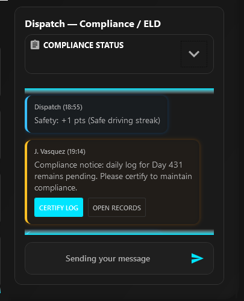
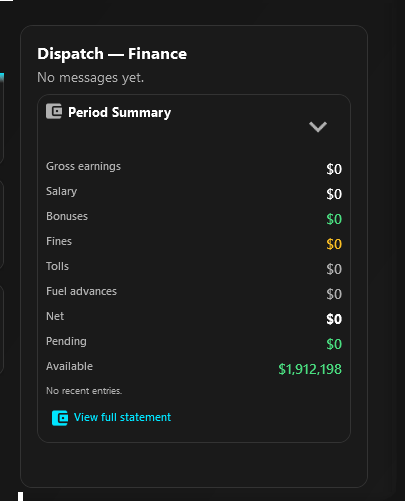

Dispatch Hub
Coordinate operations through personas, context actions, and message-driven workflows in a single operational thread system.
Overview
Dispatch is SimDuty's operational communication center. It replaces passive inbox behavior with persona-based threads and actionable messages.
Use Dispatch to react faster to HOS pressure, DVIR requests, financial notices, and routine check-ins without losing operational context.
Select the correct persona before reading or answering a message thread
Use action buttons in thread bubbles when compliance or safety actions are requested
Treat HOS extension requests as structured workflow, not free-text chat
Use Compliance and Finance summary cards for faster risk and cost awareness
Keep quick replies short and contextual to preserve clean thread history
Use Debug persona triggers for controlled UI validation and training
Operational quick path
Use this path whenever you need to go from message intake to safe action with minimal delay.
- Open
Dispatchand select the persona that matches the current operational issue. - Read the latest thread bubble first, then execute primary action buttons when present.
- If HOS extension is needed, open the message panel and submit structured request options.
- For compliance-sensitive operations, open Compliance summary and verify risk + DVIR state.
- For cost-impact events, open Finance summary and reconcile statement context.
Dispatch architecture
Dispatch is organized in two functional zones: persona roster and active thread.
- Left panel (desktop/tablet): persona cards with icon, latest preview, timestamp, and unread badge.
- Right panel: thread history with bubble style by severity and sender type.
- Bubble actions: contextual buttons such as
Acknowledge,Plan Rest Stop,Start DVIR, andContest. - Message panel: opens from
Sending your messagefor quick replies or HOS extension options. - Mobile mode: personas appear in a compact 3-column grid; selecting a persona opens full chat focus.

Persona flows
Personas are listed below in the same order as displayed in the Dispatch roster.
Friend (Brother)
- Focus: telemetry-driven check-ins and lightweight roleplay continuity.
- Primary action: use quick replies to acknowledge context without changing operational state.
- Operational rule: Friend messages support immersion, but they do not replace compliance or safety actions.
Central Dispatch
- Focus: HOS timing, route pressure, and immediate operational coordination.
- Primary actions:
Acknowledge,Plan Rest Stop, andRequest Extensionwhen limits are near critical. - Use this persona first when decisions are time-critical and route-dependent.

Compliance / ELD
- Focus: HOS remaining, DVIR status, risk level, and certification continuity.
- Primary actions: review risk chips, open
Compliance Panel, then clear certification or DVIR pending states. - Use the Compliance summary card to decide whether to open the full Compliance Panel.


Insurance
- Focus: incidents, unsafe conditions, and follow-up inspection posture.
- Primary actions: acknowledge incident context and move to DVIR/inspection flow when requested.
- Use this persona when damage, out-of-service context, or incident messaging appears.
Finance
- Focus: period summary and actionable financial context tied to operation events.
- Primary actions:
View Trip,Contest, and statement review when values look inconsistent. - Use the statement CTA to confirm gross, fines, pending, and available balance coherence.

Action matrix
Treat these as default response patterns for consistent thread handling across personas.
Central Dispatch HOS warning/alert
- Preferred actions:
Plan Rest StoporRequest Extensionwhen route context justifies it. - Expected result: clear next step in timeline and reduced violation risk.
Compliance or Vehicle DVIR request
- Preferred action:
Start DVIRimmediately when safe. - Expected result: inspection continuity restored and pending context reduced.
Finance event (fine/toll/trip reconciliation)
- Preferred actions:
View TriporContestwhen event context is inconsistent. - Expected result: reconciled financial traceability and clear decision history.
Insurance or System notice
- Preferred actions: acknowledge and follow requested inspection/safety path; use
Dismissonly when notice is already resolved. - Expected result: clean thread focus with no unresolved safety escalation.
Friend check-in message
- Preferred action: send quick reply to keep conversational continuity without interrupting operational actions.
- Expected result: roleplay continuity stays active while professional threads remain prioritized for safety/compliance decisions.
Path and reference
Main paths:
Dispatch > Persona rosterDispatch > Active threadDispatch > Sending your message(quick replies / HOS extension)Dispatch > Compliance summary cardDispatch > Finance summary card
Validation checkpoint
- Selecting personas correctly switches to the expected thread context.
- Unread badges and latest preview data remain coherent after reading messages.
- Context actions trigger expected operational navigation or status behavior.
- HOS extension and quick reply panel open/close correctly from message input area.
- Compliance and Finance summaries appear only in their related personas with valid values.
- Mobile mode shows persona grid and full chat focus without layout break.
Quick support
Symptom: action buttons do not appear on a message.
- Check: whether the message category supports contextual actions.
- Fix: switch to the correct persona/thread and trigger a supported operational message context.
Symptom: sending panel opens but no useful options appear.
- Check: active persona and current flow (HOS extension vs quick reply mode).
- Fix: change persona, reopen panel, and confirm selected context is operationally valid.
Symptom: compliance/finance summaries not visible.
- Check: selected persona is Compliance or Finance.
- Fix: switch persona and expand summary card if collapsed.
Symptom: mobile chat feels stuck on one view.
- Check: persona menu state and current grid/chat toggle action.
- Fix: use the mobile persona menu button to return to grid, then reselect persona.
FAQ
- Is Dispatch only a chat? No. Dispatch is an operational action surface with persona-driven workflows and contextual controls.
- Which persona should be checked first in a normal shift? Start from the first relevant thread in roster order (Friend, Central, Compliance, Insurance, Finance), then prioritize Central/Compliance if there is active operational risk.
- When should I use quick replies? Use quick replies for concise acknowledgments after processing required operational actions.
- Can Friend messages replace operational updates? No. Friend messages are roleplay-oriented and do not replace compliance or safety workflows.